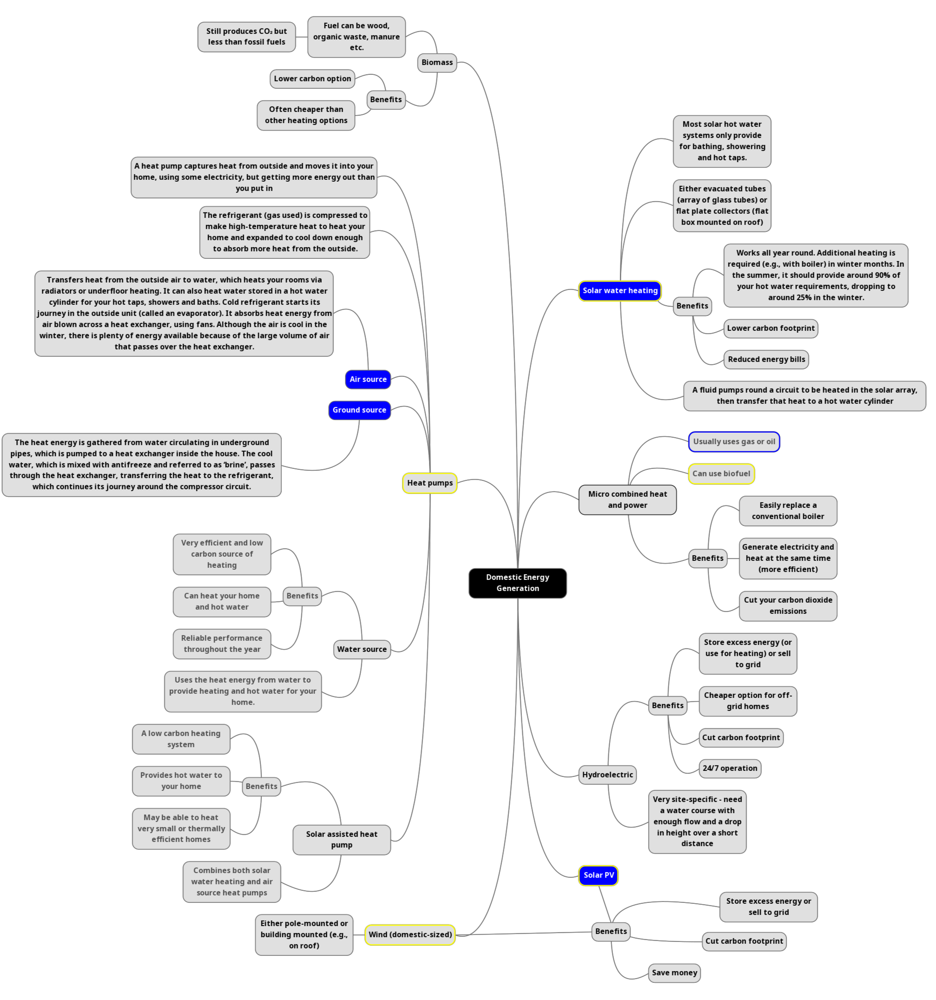

Using renewables & Saving energy in the house
Renewable energy is energy collected from Renewable sources that are naturally restored easily.
The following are examples of renewable energy sources
- Wind
- Hydroelectric
- Geothermal
- Tidal
- Biomass
Why use renewables?
- Combat rising prices of fossil fuels:
- Average annual energy bills for UK households have soared:
- April 2021: £1137
- October 2021: £1277
- April 2022: £1971
- October 2022: £2500 (under Energy price guarantee)
- Source
- A wind turbine with a generation capacity of 10 kW located at a
site with average wind speeds of 12 miles per hour can produce approximately 10,000 kWh annually, enough to power a small building.
Assuming an average price for commercial electricity of 10.70 per kWh (as of June 2013), the wind turbine would reduce annual grid-based electricity
costs by approximately $1,070. With installed costs for on-shore turbines ranging between $1,200 and $2,100 per kW capacity and including a federal
tax credit of 30%, these savings could mean a simple payback period of less than six years. Sources: EIA, 2013; AWEA, 2007; NREL 2012b
- Fossil fuel combustion for electricity generation accounts for 67 percent of the U.S.'s sulfur oxides (SOX) emissions, 23 percent of the U.S.'s
nitrogen oxides (NOx) emissions, and 40 percent of the U.S.'s carbon dioxide (CO2) emissions, pollutants that can lead to smog and acid rain, and increase
the risk of climate change (U.S. EPA, 2008)
- The Paris Agreement sets a goal to limit the increase in global average temperature to well below 2°C above pre-industrial levels and to attempt to limit
the increase to 1.5°C. Implicit in these goals is the need for a transition to a low-carbon energy sector, which accounts for two-thirds of global emissions.
Renewable Energy, coupled with energy efficiency gains, can provide 90% of the CO2 emissions reductions needed by 2050.
- The alternative (fossil fuels) have a plethora of disadvantages to our environment:
- In 2018, fossil fuels and industry were accountable for 89% of global CO2 emissions.
- Coal is the dirtiest fossil fuel as it is responsible for over 0.3°C of the 1°C increase in global average temperatures, making it the single largest source of global temperature rise.
- Natural gas is often promoted as the cleaner energy source out of the fossil fuels, but it still accounts for a fifth of the world’s total carbon emissions.
- The Intergovernmental Panel on Climate Change (IPCC) warns that fossil fuel emissions must be halved within 11 years if we want to limit global warming to 1.5°C above pre-industrial levels.
- The Paris Agreement sets out a global framework to reducing global warming to 1.5°C. However, a recent report by the UN Environment Programme shows that globally,
we will produce more than two times the amount of coal, oil and gas by 2030 than we can burn if we are to limit global warming by 1.5C.
- Apart from climate change, fossil fuel mining, unearthing, processing results in land degradation. Strip mining results in masses of land, including forests and mountaintops,
are scraped away to get to underground coal or oil. As a result, habitat is destroyed.
- Coal mining operations wash toxic runoff into streams. There have been several oil spills in recent years, which have a devastating impact on the ocean’s ecosystem.
- Fracking results in contaminated drinking water and jeopardised ocean ecosystems. Mining produces wastewater, which is full of heavy metals, radioactive elements,
and other pollutants, which can get to waterways and aquifers. The pollutants are linked with cancer, birth defects, and neurological damage.
- The ocean’s chemistry is changed when we burn fossil fuels, as we contribute to ocean acidification, meaning that calcium carbonate levels fall,
which is useful for marine organisms to form shells, slowing growth rates, weakening shells, and endangering food chains.
- Source
- Source
How can I use renewables in my house?

- Source: Energy Saving Trust
- Blue fill: Common types of domestic energy generation
- Blue outline: Non-renewable sources
- Yellow outline: Renewable sources